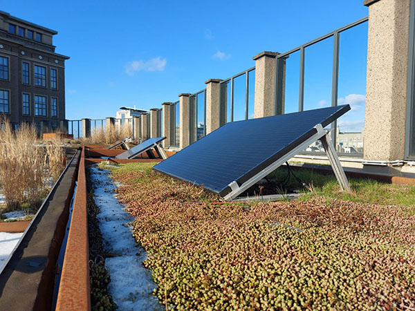

Hey daar!
Mijn passie voor groen in de stad is de reden achter deze website. Amsterdam kan nog groener, en dat niet alleen omdat het rustgevend en visueel aantrekkelijk is, maar ook omdat het de stad kan opvrolijken. Ik wil mijn ontdekkingen en overtuigingen delen, in de hoop dat we samen een groenere toekomst voor onze stad kunnen creëren.
Wat mij inspirireert
Tijdens een schoolproject kwam ik in aanraking met de missie van De Dakdokters. Zij vinden dat stadsdaken een waardevolle bron is voor meer groen die vaak onbenut blijft. De Dakdokters hebben dan ook als doel om zoveel mogelijk daken in Nederland te vergroenen. Denk aan een groen dak vol met kruiden, een paradijs voor bijen, of een groen toevluchtsoord om even te ontsnappen aan de stadse drukte. Een van hun project is dan ook het Blue Green Roof HvA waar ik af en toe heen ga maar kijk gerust ook op hun website voor andere projecten.
Daktuin HvA
Op het dak van het Benno Premselahuis van de Hogeschool van Amsterdam groeit iets bijzonders. Dankzij RESILIO is het dak niet alleen groen, maar ook een plek voor milieuprojecten. Het Innovation Lab daar doet onderzoek naar waterbeheer en zonnepanelen. Als deel van 'RESILIO' draagt dit groene dak bij aan duurzaamheid en natuur midden in Amsterdam.